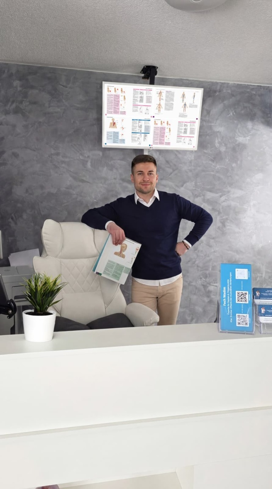
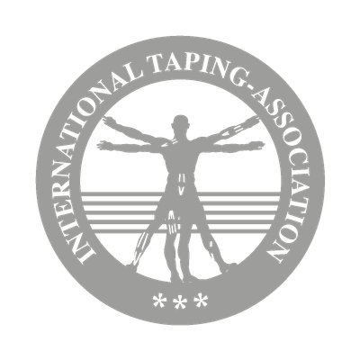

Über mich
Dein Faszien- & Sporttherapeut.
Ich bin Wadim Fech, selbstständig mit Schwerpunkt auf manueller Tiefengewebearbeit. Du bist bei mir richtig, wenn du anhaltenden Druck, Ziehen oder Stechen spürst – im Nacken, in Schultern, Rücken, Armen oder Beinen.
Transparenz
Was ich nicht bin.
- Kein Arzt
- Kein Orthopäde
- Kein Physiotherapeut
- Kein Heilpraktiker
Ich stelle keine Diagnosen und behandle keine Krankheiten wie Krebs, Rheuma oder Organstörungen. Ich ersetze keine ärztliche, heilpraktische oder physiotherapeutische Behandlung.
Meine Arbeit
Was ich tue.
- Körperzentriert
- Ehrlich und tiefgehend – für Menschen mit Spannung, Bewegungseinschränkung oder anhaltenden Beschwerden.
- Triggerpunktarbeit
- Gezielt an Triggerpunkten und tiefen Faszienstrukturen, dort wo Beschwerden entstehen.
- Nachhaltige Linderung
- Besonders, wenn bisher keine passende Lösung gefunden wurde.
Freiheit.
Ruhe.
Beweglichkeit.
Nicht Symptome bekämpfen, sondern erkennen, wo dein Körper festhält – und dort gezielt Druck und Entlastung geben.
Wofür ich stehe
Werte & Prinzipien.
- 01 /
Ehrlichkeit
Ich sage dir klar, womit ich helfen kann – und womit nicht. Keine Versprechen, die ich nicht halten kann.
- 02 /
Tiefenarbeit
Gezielt an den Strukturen, die für deine Beschwerden verantwortlich sind – nicht an der Oberfläche.
- 03 /
Nachhaltigkeit
Keine kurzfristige Erleichterung, sondern eine dauerhafte Verbesserung – schmerzfreier und beweglicher.
Meine Geschichte · 5 Kapitel
Der Weg zu dem, was ich heute tue.
- 01 /
Der Ursprung
Der Zugang entstand früh durch intensiven Sport, unter anderem Boxtraining.
- 02 /
Das Interesse
Wie reagieren Muskulatur, Faszien und Gewebe auf körperliche Belastung?
- 03 /
Vertiefung
Fachliteratur zu Muskelverhärtungen, faszialen Strukturen und Triggerpunkten.
- 04 /
Die Ausbildung
Ausbildungen an privaten Instituten: Faszienbehandlung, tiefe Gewebeschichten, Triggerpunkte.
- 05 /
Heute
Arbeit mit Menschen, die Druck, Ziehen, Stechen oder Verhärtungen von Kopf bis Fuß spüren.
Ausbildung & Zertifikate
